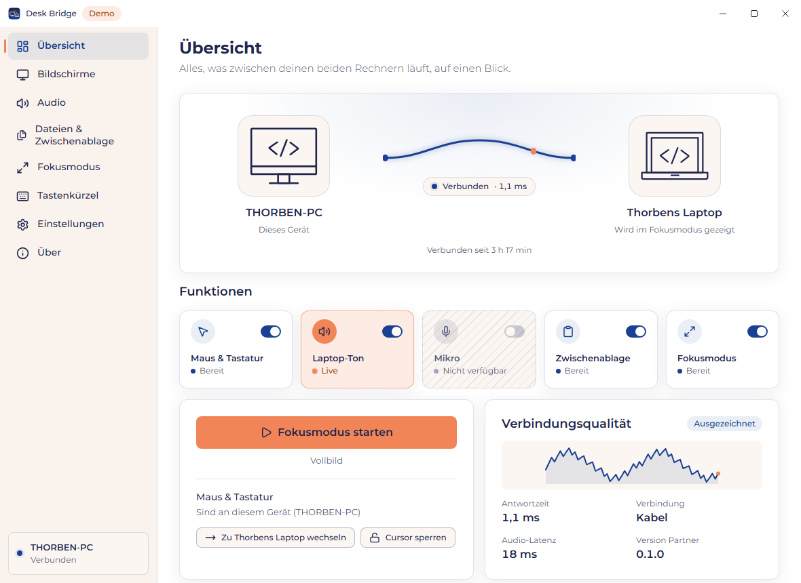
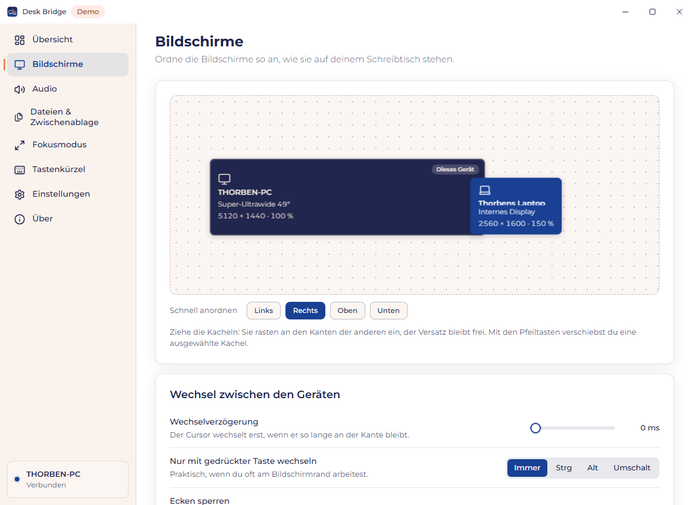
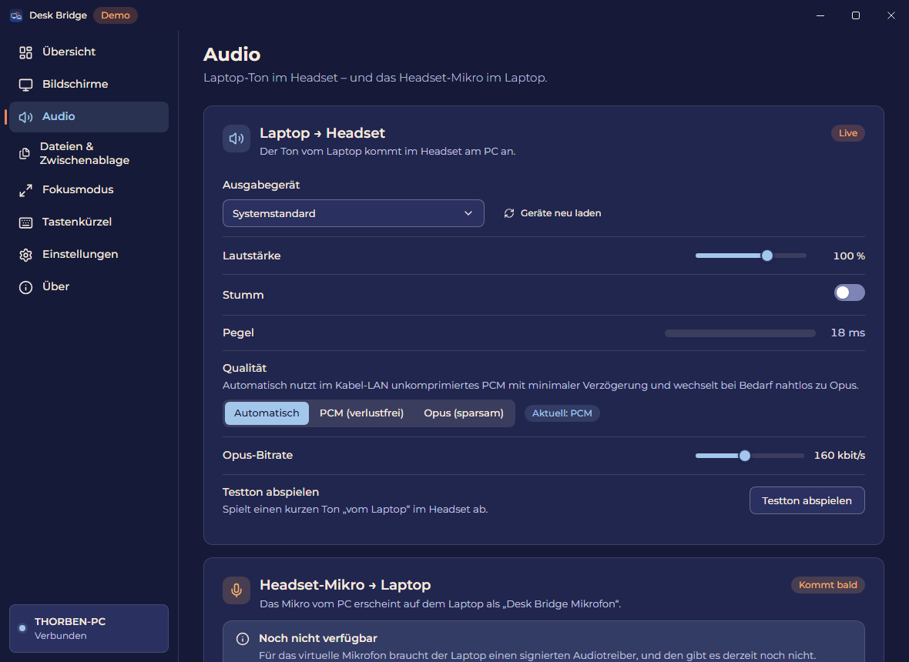

Was Desk Bridge kann
Maus & Tastatur
Maus über den Bildschirmrand schieben – schon steuerst du den Laptop. Unter 3 ms zusätzliche Latenz im Kabelnetz.
Laptop-Ton im Headset
Alles, was der Laptop abspielt, kommt im Headset am PC an – gemischt mit dem PC-Ton.
Zwischenablage & Dateien
Text, Bilder, Dateien: auf dem einen Gerät kopieren, auf dem anderen einfügen – mit dem Kopierdialog des Explorers.
Fokusmodus
Der Laptop im Vollbild oder als Hälfte deines Ultrawide, in nativer Auflösung und bis zu 120 Hz.
Ein Installer
Treiber, Firewall-Regel und Autostart bringt die Installation selbst mit. Koppeln mit einem 6-stelligen Code.
Privat & offen
Keine Cloud, kein Konto, keine Telemetrie. MIT oder Apache-2.0.
So sieht es aus

